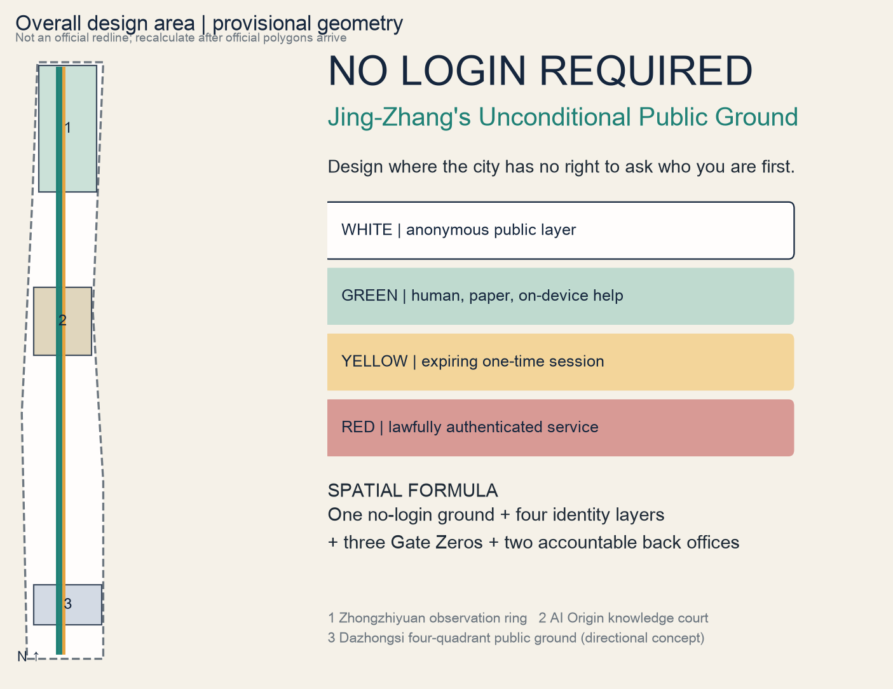
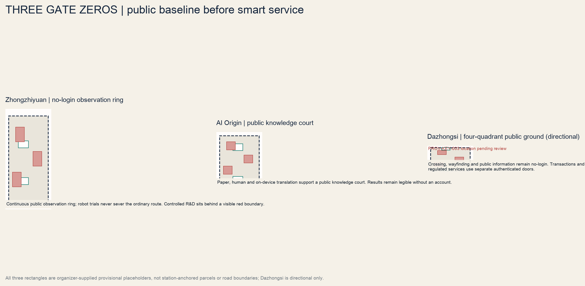
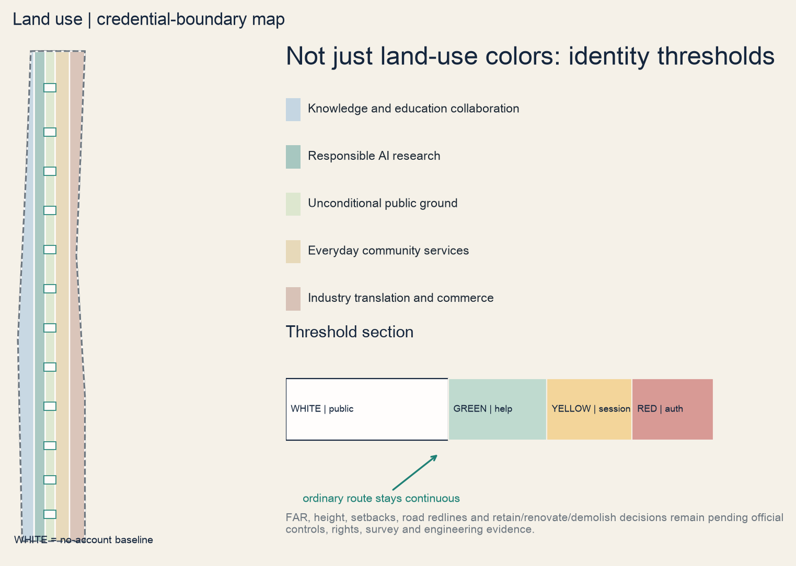
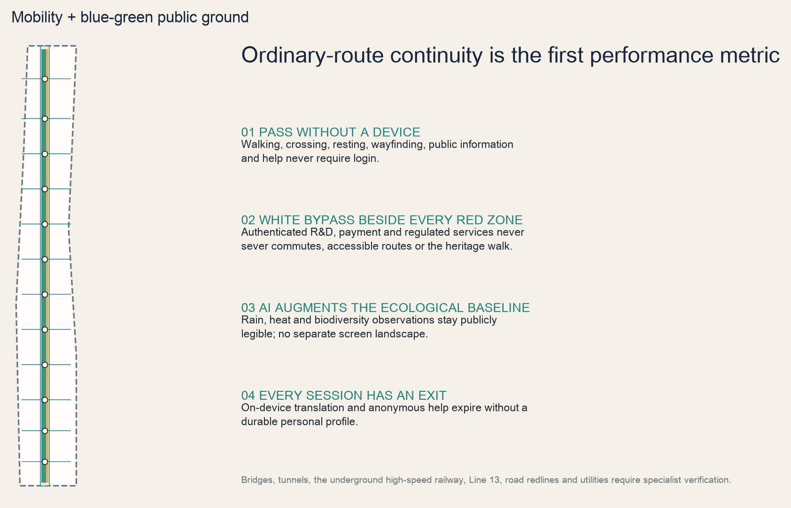
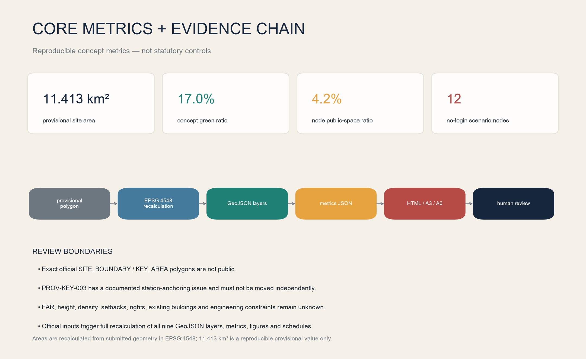

Industry and future-city mechanisms, without inventing a master boundary.
Overview map

Three-level scope
A provisional 11.413 km² polygon is the reproducible concept baseline.
Three provisional rectangles support content review and directional design only.
Key areas

Land use

Walk, sit, read, cross, know and ask for help.
Human, paper, tactile and temporary on-device tools.
Visible countdown; automatic expiry; no durable profile.
R&D, payment and regulated services; a clear threshold and white bypass.
Mobility

Blue-green public space
Build on existing sponge systems, park, tracks and shade; show rain, heat and biodiversity on public status boards legible without a device.
Buildings
Nine footprints locate Gate Zero prototypes only. Retention and adaptive reuse come first; no demolition, height or floor-area commitment precedes survey.
Renewal projects
Ordinary routes, paper wayfinding, human desks and credential-boundary audit.
Three industrial trials, public status boards and accountable back offices.
Extend after official boundary and engineering checks; pilots never predetermine statutory plans.
AI scenarios
| # | Scenario | Identity path | Exit |
|---|---|---|---|
| 01 | Tactile + paper bilingual wayfinding | white → green → yellow; red uses a separate door | expiry / human stop |
| 02 | No-login railway heritage walk | white → green → yellow; red uses a separate door | expiry / human stop |
| 03 | Human-backed AI help point | white → green → yellow; red uses a separate door | expiry / human stop |
| 04 | Account-free public knowledge court | white → green → yellow; red uses a separate door | expiry / human stop |
| 05 | Public model-status board | white → green → yellow; red uses a separate door | expiry / human stop |
| 06 | Anonymous health navigation | white → green → yellow; red uses a separate door | expiry / human stop |
| 07 | Profile-free local discovery | white → green → yellow; red uses a separate door | expiry / human stop |
| 08 | White-route robot-test bypass | white → green → yellow; red uses a separate door | expiry / human stop |
| 09 | No-face event entry | white → green → yellow; red uses a separate door | expiry / human stop |
| 10 | Physical-token civic feedback | white → green → yellow; red uses a separate door | expiry / human stop |
| 11 | On-device temporary translation | white → green → yellow; red uses a separate door | expiry / human stop |
| 12 | Profile-free terminal trial | white → green → yellow; red uses a separate door | expiry / human stop |
Core metrics

Task coverage
The bilingual 13-section narrative, nine GeoJSON layers, five paired figures, three scopes, three areas and two wings, personas, scenarios, landmarks, global cases, phasing, risk and long-term operations all have evidence links.
Self-check
Before submission, run the official finalizer, self-check, spatial review, visual review and participant preflight; refresh manifest hashes after every later edit.
Sources
| Beijing Haidian planning announcement | 43.6/11.4/368.4 ha scopes and tasks |
| Organizer site package | provisional geometry, enums, gaps and taskbook |
| Beijing Cultural Heritage Bureau | Qinghuayuan Station protection controls |
| Beijing Forestry and Parks Bureau | heritage park and sponge baseline |
| Helsinki AI Register / Amsterdam Tada | transparency, agency and human scale |
| Punggol / Decidim / Kendall / Montreal / Kalasatama | platforms, participation, ecosystem and responsibility |
Assumptions
- All spatial boundaries are conceptual, not official redlines.
- The provisional Dazhongsi rectangle awaits Issue #1029 and official evidence.
- No deterministic claims are made on height, intensity, demolition, rights, roads or engineering.
- No-login applies to public ground, basic wayfinding, basic participation and human alternatives only.